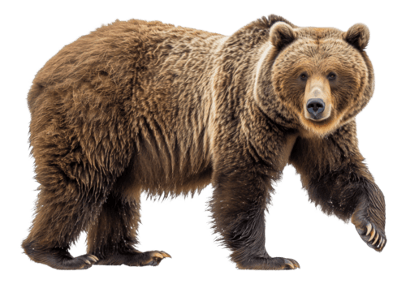

El oso es un mamífero grande y fuerte que vive en diferentes partes del mundo. Es conocido por su gran tamaño y su fuerza.
Los osos viven en bosques, montañas y zonas frías de América, Europa y Asia.
Son animales omnívoros; comen plantas, frutas, peces e insectos.